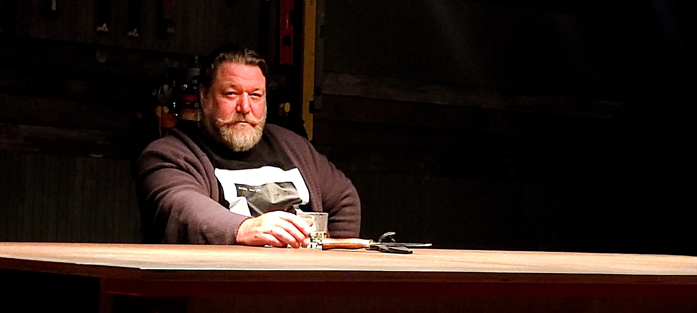

Иван Дьяков
Декоративная живопись, горячая эмаль и искусство образа.
Член Союза художников России, доцент кафедры изобразительного искусства СПбГУ. С 2005 года преподаёт живопись и современную горячую эмаль.

Об авторе
- Член Союза художников России.
- Окончил СПГХПА им. А. Л. Штиглица по специальности художника-монументалиста.
- Доцент кафедры изобразительного искусства СПбГУ.
- Преподаёт дисциплины «Живопись» и «Современная горячая эмаль».
- Награждён Золотой медалью Российской академии художеств.
- Участник выставок современного декоративного искусства в России и за рубежом.
Материал и образ
В середине 1990-х Иван Дьяков познакомился с техникой горячей эмали: медная пластина, цветное тонкотёртое стекло и муфельная печь стали основой его художественного языка. В процессе обжига материал сохраняет элемент непредсказуемости, а задача художника — подчинить стихию огня авторскому замыслу.
Дьяков соединяет традицию Лиможской эмали с современной живописной эмалью, совмещая ювелирную точность технологии со свободой монументального рисунка и живописи.
В совместных проектах с Анной Векслер горячая эмаль вступает в диалог с текстилем и коллажем.
Избранные события
- с 1990-хРаботает с техникой горячей эмали и развивает авторский язык живописной эмали.
- с 2005Преподаёт живопись и современную горячую эмаль на факультете искусств СПбГУ.
- 2013Персональная выставка «Горячая и станковая эмаль» в музее «Русский Левша».
- 2017—2018Создана работа «Большой улов II», вошедшая в коллекцию Мурманского областного художественного музея.
- 2022Награждён Золотой медалью Российской академии художеств.
- 2023Участник выставки «Собрание сочинений. Том 31» в Москве.
- 2024Совместный проект «Собрание сочинений. Том 33. Символы и знаки».
- 2026Новые работы и выставочные проекты в Санкт-Петербурге.